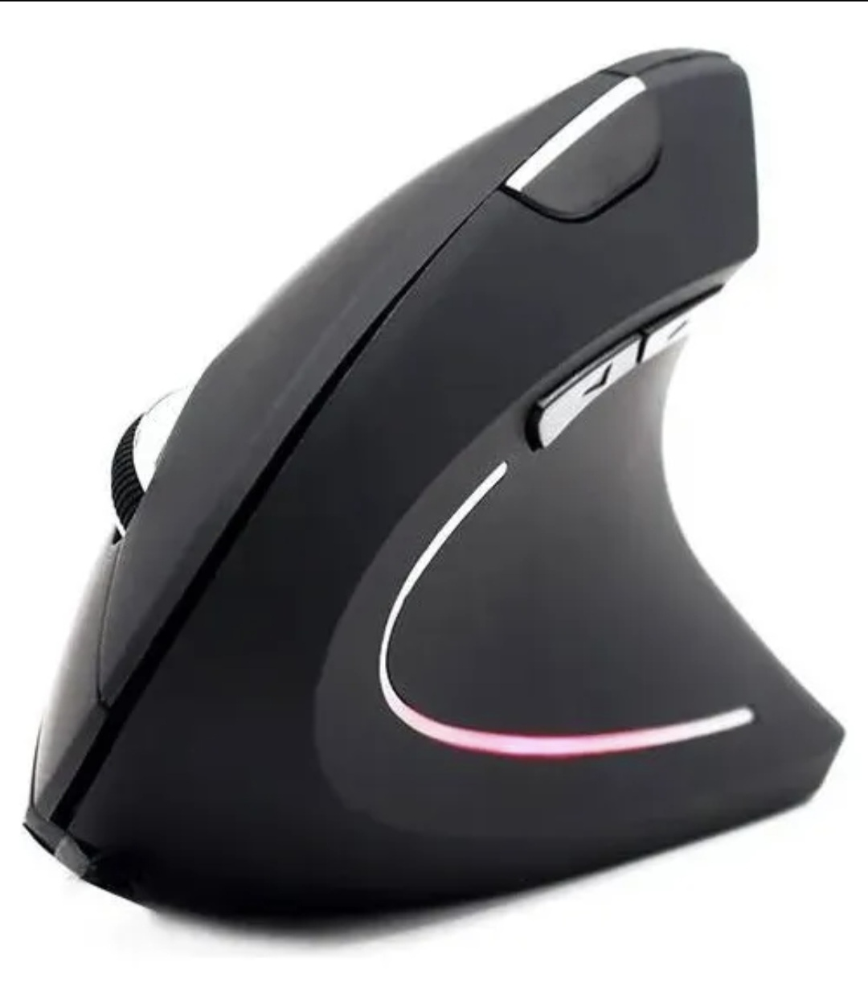

Mouse Ergonómico Vertical Unitec
Diseño vertical para reducir la tensión de la muñeca. Conexión inalámbrica y 6 botones configurables.
- Conexión: USB 2.4GHz
- Batería: Recargable
- Compatibilidad: Windows, Mac, Linux
Esta sección recopila periféricos y herramientas útiles que considero recomendables para técnicos, desarrolladores y entusiastas del software libre. Los enlaces llevan a tiendas externas donde puedes explorar más detalles o adquirirlos.
Diseño vertical para reducir la tensión de la muñeca. Conexión inalámbrica y 6 botones configurables.
Teclado compacto con retroiluminación RGB y switches mecánicos. Ideal para programación y gaming.
Unidad de estado sólido externa con gran velocidad de lectura/escritura. Compacta, ideal para backups.
Computadora de placa única para proyectos de automatización, servidores, redes o educación técnica.
Pantalla externa USB-C ideal como monitor auxiliar para codificación, terminal o multitarea.
Evita miradas laterales en entornos públicos. Protege tu pantalla sin afectar la visibilidad frontal.